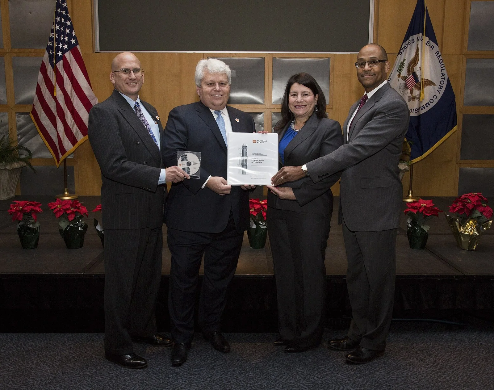
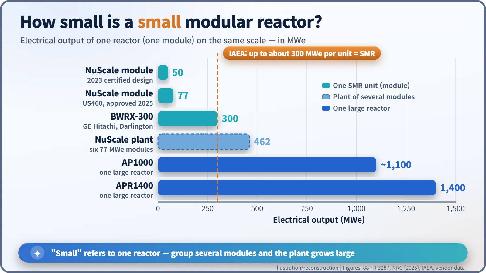
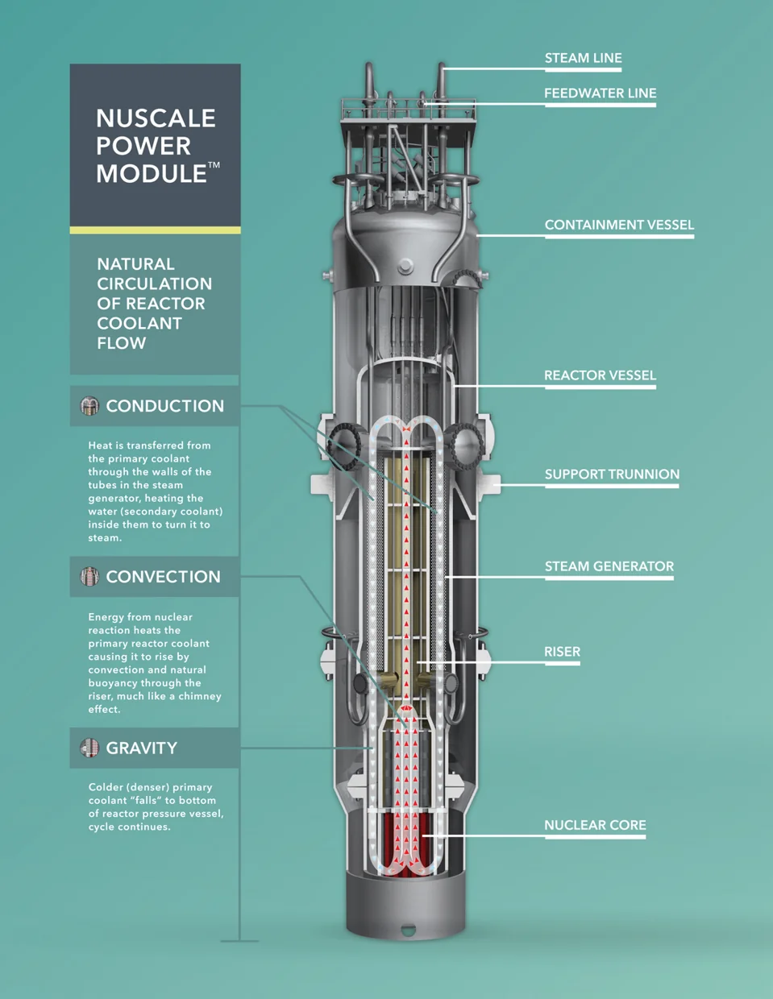
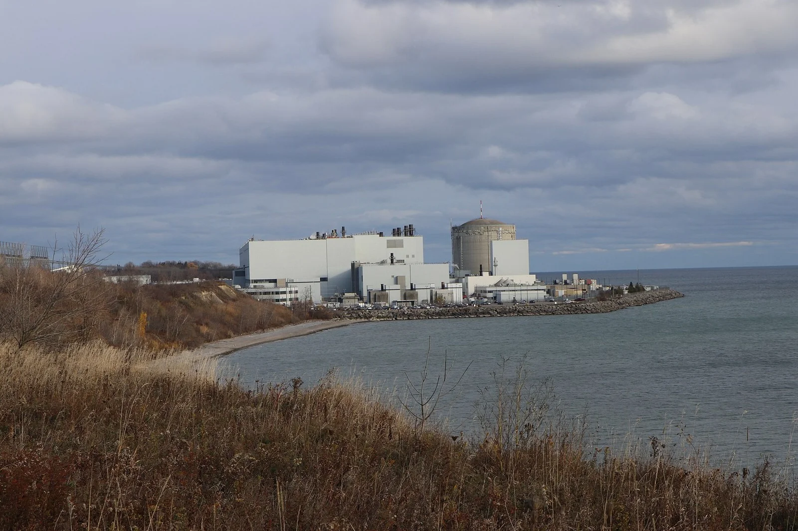
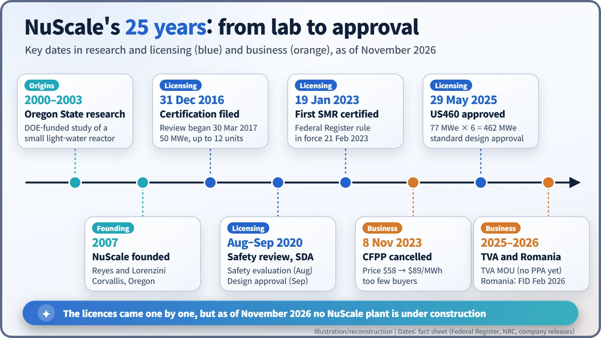

Nuclear History · 287
Reactors Off the Assembly Line? The Rise of SMRs and NuScale's Design Certification
A university spin-off with a pump-free reactor cleared the NRC twice, but as of November 2026 no NuScale plant has broken ground.
Small modular reactors (SMRs) promised to turn nuclear plants from one-off megaprojects into factory products. NuScale, a spin-off from Oregon State University, became the first SMR design certified by the U.S. Nuclear Regulatory Commission in 2023 and won approval for a larger 77 MWe module in 2025. Yet its first project was cancelled in 2023, and as of November 2026 no NuScale plant is under construction.
A binder and a CD
On 12 January 2017, at the headquarters of the U.S. Nuclear Regulatory Commission (NRC), four people in suits posed for the camera, jointly holding up a white binder and a CD. The binder's cover read "Design Certification Application". It came from NuScale, a small company from Oregon, and it was the first application to certify the design of a small modular reactor (SMR) in the United States. Turning that binder into an approved design would take six years. [1]

Tired of building big: "small, and many"
The stars of the early-2000s "nuclear renaissance" were large reactors of more than 1,000 MWe (megawatts of electrical output). Yet the first units of new designs kept running years late and over budget. Critics began to argue that building an enormous plant in one go was itself the risk.
The answer many proposed was the small modular reactor. The International Atomic Energy Agency (IAEA) describes SMRs as reactors with an electrical output of up to about 300 MWe per unit. Three ideas sit at the core: build identical modules in a factory and ship them; add modules when more power is needed; and cool the reactor with gravity and natural circulation rather than pumps and outside power, so-called passive safety. Think of it as moving from a craftsman's workshop to an assembly line. [8]

A reactor without pumps, sitting in a pool
NuScale began in a university lab. From 2000 to 2003, Oregon State University studied a small light-water reactor with funding from the U.S. Department of Energy (DOE). Professor José N. Reyes, who led that work, founded NuScale in 2007 with Paul G. Lorenzini. In 2011 the young company ran short of money; the engineering firm Fluor rescued it by buying a majority stake.
The design's signature is the absence of pumps. The reactor and its steam generators sit together inside a single tall steel containment vessel. Water heated in the core becomes lighter and rises up a central tube like smoke up a chimney; it hands its heat to the steam generators, cools, becomes heavier and sinks again. Because the loop runs on differences in density alone, no reactor coolant pumps are needed. The modules stand in individual bays of a large shared pool, whose water can absorb heat in an emergency.

Six years of review: "certification" versus "approval"
The application was dated 31 December 2016, and the NRC formally began its review on 30 March 2017. The final safety evaluation came in August 2020, and in September 2020 the NRC issued a standard design approval (SDA) for a design of 50 MWe per module (160 MWt thermal), with up to 12 modules for 600 MWe. The design certification rule followed in the Federal Register on 19 January 2023 and took effect on 21 February 2023, the first SMR design certification in the United States. [1] [2]
One striking detail concerned electricity. The design has no safety-grade emergency AC or DC power systems of the kind large plants carry, and the NRC granted 17 exemptions in all, including the related requirements. It also left three issues unresolved, among them steam generator stability, for any company that actually builds the design to settle. [1]
The two terms are worth separating. A design certification (DC) is issued through rulemaking and becomes part of the regulations; an SDA is an approval that licence applicants can reference, but it is not a rule. Neither one is a permit to build.
The first customer walks away
The first project was the Carbon Free Power Project (CFPP), to be built at Idaho National Laboratory for the Utah Associated Municipal Power Systems (UAMPS). It was scaled back to six 77 MWe modules (462 MWe). In January 2023 the target power price rose from $58 per MWh (announced in 2021) to $89, and the estimated construction cost reached about $9.3 billion. With too few member utilities signing up to buy the power, the project was terminated on 8 November 2023. [4]
Licensing carried on regardless. US460, a six-module, 462 MWe design with each module uprated to 77 MWe (250 MWt), received a standard design approval on 29 May 2025, after a review of less than two years. [3]
November 2026: still a plant on paper
In September 2025, the Tennessee Valley Authority (TVA) and ENTRA1 Energy announced a collaboration to deploy up to 6 GW using NuScale technology. TVA, however, described the document as a memorandum of understanding, and as of NuScale's August 2026 results a definitive power purchase agreement was still under discussion. [5] [6] In Romania, shareholders of the utility Nuclearelectrica approved a final investment decision in February 2026 for six modules at Doicești, a former coal-plant site, on condition that a funding formula is found, with the first module targeted for commercial operation in 2033. [7] In Canada, a rival design, GE Hitachi's BWRX-300, received a construction licence at Darlington in 2025.

As of November 2026, no commercial SMR is operating in the United States, and no plant using NuScale's design has begun construction. The advantages of factory production only appear once orders pile up. Whether the "small, and many" strategy succeeds will come down to the cost of the first units and the size of the order book.
